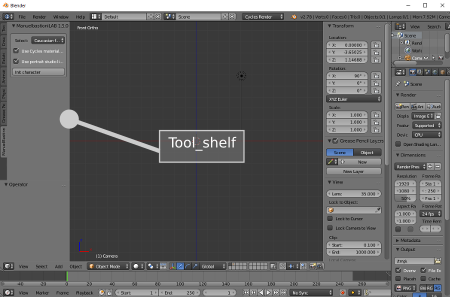
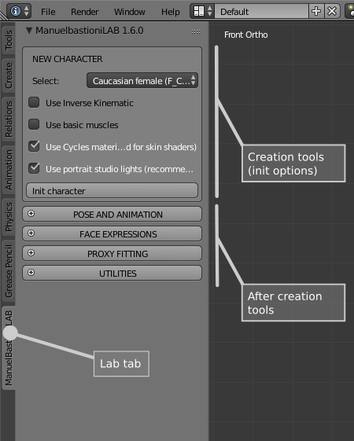
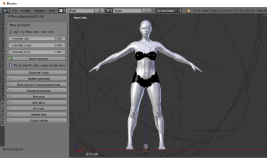

Getting started
The user interface is perfectly integrated in Blender and designed to make the modelling process a simple and clear activity.
The ManuelbastioniLAB tab is placed in the Blender "Tool shelf" column.

The lab is designed for a production pipeline divided in two main steps:
- Creation phase: definition of the body, the physiognomy and the appearance of the character. The model will be characterized with age, muscles, mass, face details, measures, skin shader and skin textures. This phase also includes the random generator, the automodelling, the character library, the definition of rest pose and the type of rigging to use (for example with inverse kinematic or not).
- After-creation phase: use of finalized model during production. This phase includes the loading of poses and animation (with automatic retarget) the control of the expressions and the automatic fitting of proxies (clothes, hair).
These two phases are reflected in the organization of the interface, that is divided in two parts. The upper section is for the creation step, while the lower section is for after-creation work.

NOTE: The "after-creation" section is hidden during the creation step. It's automatically enabled only for finalized characters.
At the start the creation section contains only few elements:
- The selector to choose the base model
- The option related to the type of skeleton (basic, with inverse kinematic, with bending muscles)
- The init button to initialize it
- Some options related to rendering engine and lights
ManuelbastioniLAB includes a set of base characters, as shown in the figure:

Pressing the "init character" button, Blender will create the selected model, placing it in the centre of the scene, at coordinates 0,0,0.
If the option "Use cycles materials" is active, Blender will use Cycles for rendering. This option is required in order to use the skin editor, that is specifically designed to work with cycles.
The option "Use portrait studio lights" is to create a set of lights already scaled and normalizated in order to reproduce a professional studio setup.

The system has to import some hundreds of morphings, so it requires some seconds. At the end of the process the character will be ready for modifications.